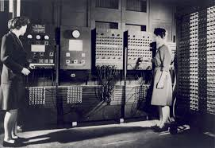
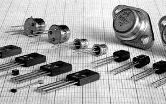
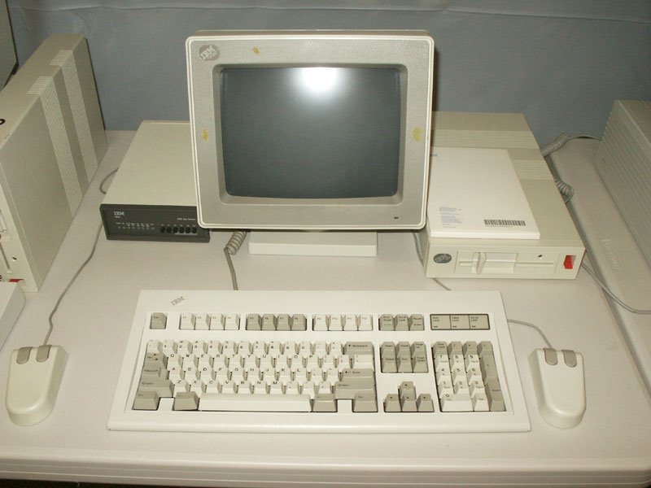
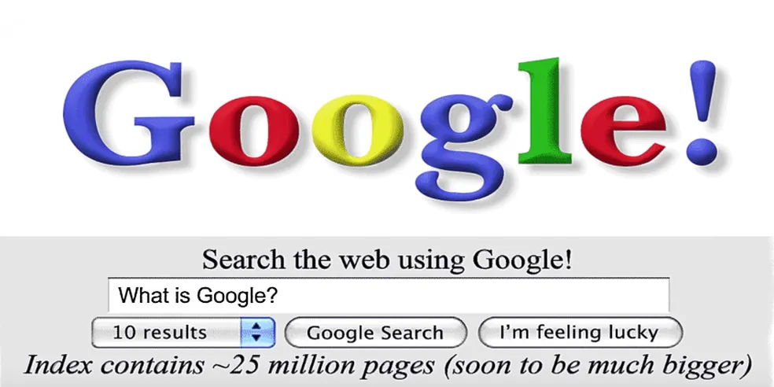
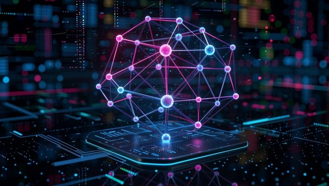

A Era das Válvulas e Relés

Surgem os primeiros computadores digitais de grande porte, como o ENIAC. Eles utilizavam milhares de relés e válvulas termiônicas, eram gigantescos e consumiam muita energia.
A Evolução Computacional: Da Mecânica à Inteligência Artificial

Surgem os primeiros computadores digitais de grande porte, como o ENIAC. Eles utilizavam milhares de relés e válvulas termiônicas, eram gigantescos e consumiam muita energia.

A invenção do transistor substitui as válvulas de vidro. Os computadores tornaram-se consideravelmente menores, mais rápidos, mais baratos e mais confiáveis.

A criação dos circuitos integrados (chips) permitiu colocar milhares de transistores em uma pequena placa de silício. Surgem os computadores pessoais (PCs) de mesa.

A popularização da Internet e a chegada dos smartphones transformaram o computador em uma ferramenta portátil, global e totalmente conectada em rede.

A computação atinge o nível de processamento em larga escala na nuvem. Modelos avançados de IA conseguem criar textos, códigos, imagens e raciocinar de forma contextual em milissegundos.